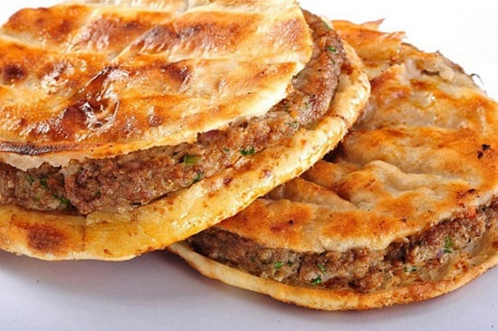

home
hawawshi recipe

Description
Hawawshi is Egypt’s answer to the burger, but with a far more flavorful and aromatic twist. Often called the "Egyptian meat pie," it consists of a spiced minced meat mixture stuffed inside bread and baked until the bread is golden-crisp and the meat is juicy.
Ingredients
The Meat Filling
- Ground Meat: 500g (1 lb) of ground beef or lamb (at least 20% fat is essential for juiciness).
- Onions: 2 medium onions, very finely minced or grated (squeeze out excess liquid to avoid soggy bread).
- Peppers: 1–2 bell peppers (green) and 1–2 hot chili peppers (optional), finely diced.
- Tomatoes: 1 medium tomato, seeded and finely diced.
- Fresh Herbs: 1/2 cup fresh parsley, finely chopped.
- Fat (Optional): 1 tbsp of ghee or rendered lamb fat for authentic street-food flavor.
The Spice Blend (Hawawshi Spice)
- 1 tsp Salt & 1/2 tsp Black pepper
- 1 tsp Allspice (the "secret" dominant flavor)
- 1/2 tsp Ground coriander
- 1/2 tsp Ground cumin
- 1/4 tsp Ground cinnamon
- 1/4 tsp Cardamom or Nutmeg (optional)
The Bread
- 4–6 Loaves of Egyptian Baladi bread or thick whole-wheat pita pockets.
Steps hawawshi-recipe
- Prepare the Filling
Carefully open the edge of the pita bread to create a pocket. Take a handful of the meat mixture (roughly the size of an orange) and spread it in a thin, even layer inside the bread, reaching all the way to the edges.
Tip: Let the meat marinate in the fridge for 30 minutes to an hour to allow the flavors to meld.
- Stuff the Bread
arefully open the edge of the pita bread to create a pocket. Take a handful of the meat mixture (roughly the size of an orange) and spread it in a thin, even layer inside the bread, reaching all the way to the edges.
- The "Crisp" Coating
Brush the outside of the bread generously on both sides with olive oil, melted butter, or ghee. This ensures the bread fries and crisps up rather than just drying out in the oven.
- Cooking Methods
- Oven (Recommended):Wrap each loaf in parchment paper or aluminum foil (to keep it juicy) and bake at 200°C (400°F) for 15 minutes. Then, unwrap and bake for another 5–10 minutes directly on the rack until the bread is browned and crunchy.
- Stovetop:Heat a skillet over medium-low heat. Place the stuffed bread in the pan and press down with a heavy weight (like another pan). Flip every 4–5 minutes until the meat is cooked through and the bread is golden-brown.
What to Serve it With
Hawawshi is rarely eaten alone. To complete the experience, serve it with:
- Tahini Sauce: The creamy, nutty dip is the standard pairing.
- Pickled Vegetables (Torshi): Especially pickled turnips and peppers.
- Arugula (Jarjeer): Fresh greens help cut through the richness of the meat.